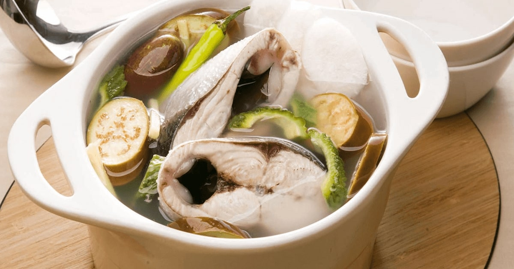

Home
Paksiw

Paksiw is a classic Filipino dish where meat or fish is simmered in vinegar, garlic, and spices, giving it a distinct sour and savory taste.
It’s commonly made with fish like bangus (milkfish) or lechon, and is loved for its rich flavor that pairs perfectly with rice.
Ingredients
- 1 1/2 lbs. milkfish cleaned and sliced crosswise into serving pieces
- 3 thumbs ginger crushed
- 5 cloves garlic crushed
- 1/2 cup white vinegar
- 1 cup water
- 1 piece onion sliced
- 1 piece Chinese eggplant chopped
- 5 pieces okra
- 2 pieces long green pepper
- 1 teaspoon whole peppercorn
- Salt to taste
Steps
- Arrange ginger, garlic, okra, onion, long green pepper, peppercorn, and eggplant on the pot.
- Top with bangus slices.
- Pour water and vinegar. Apply heat and let boil. Cover and continue to cook in low to medium heat for 15 minutes.
- Add salt to taste.
- Transfer to a serving plate. Serve.
- Share and enjoy!